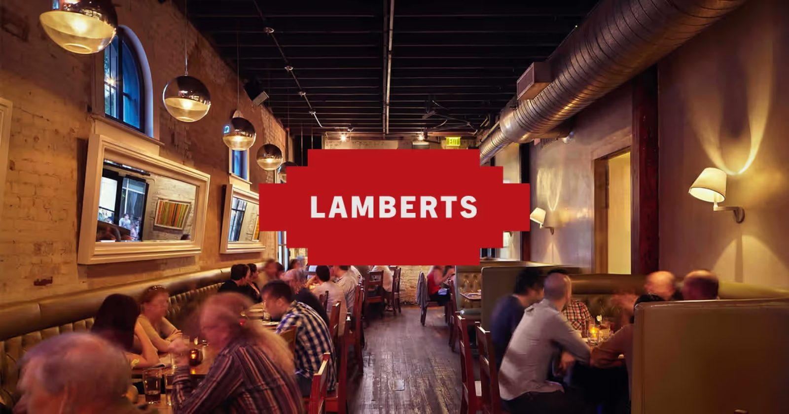

Smoked meats
Brisket with a dark bark, smoked ribs that fall off the bone, and boar and lamb ribs.

Barbecue restaurant · Austin, TX
Smoked ribs, brisket and mac and cheese in a lively brick dining room.

Ribs that fall off the bone. Brisket with real bark. Rich mac and cheese.
Brisket with a dark bark, smoked ribs that fall off the bone, and boar and lamb ribs.

The barbecue plate with creamy mac and cheese, mashed potatoes and house BBQ sauce on the side.

A lively room downtown with music, a place for groups and a team that handles reservations and special setups.



4.4 2138 Google reviews
Having spent plenty of time eating BBQ across the U.S., I had high expectations for Lambert’s and it absolutely delivered. The smoked ribs were the standout, tender, smoky, packed with flavor, and quite simply some of the best I’ve ever had. The meat fell clean off the bone without being overcooked, with that perfect balance of bark, smoke, and seasoning.
Lamberts is my favorite barbecue experience I have ever had! My brother and I have made it a tradition to celebrate our birthdays here every year, and since we both travel to Austin for the occasion, we always make sure Lamberts is part of the trip. From the incredible food to the exceptional staff, everything about this place is outstanding.
There was a review on here that said the brisket was great so I decided to pop over for dinner. My server was lovely, and asked if I had come in for anything special. I said that I had seen a review for the brisket but was open to suggestions. He was fantastic! He spent about 3 minutes going over each item telling me which was his favorite and why.

An old brick building with a glowing red sign. Inside it's warm, lively and full of shared plates on long tables.
Friendly staff who know the menu and are happy to help with a special occasion.
401 W 2nd St, Austin, TX 78701
Call ahead for a table, or ask about private dining and catering.